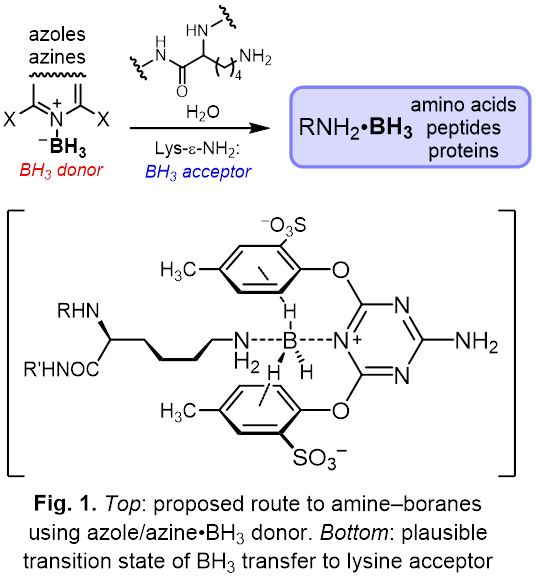
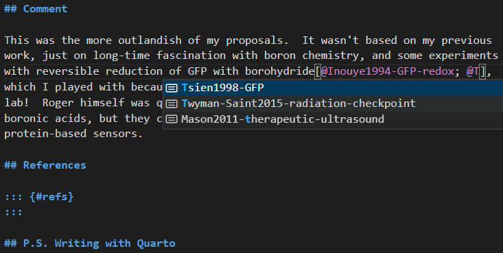

Aqueous chemistry and biological applications of boron hydrides
The research on borane (BH3) and its derivatives was recognized with two Nobel Prizes, awarded to William Lipscomb(1) in 1976 and Herbert Brown(2) in 1979. Boron hydrides are rarely used in water due to poor aqueous stability. Sodium borohydride (NaBH4), the most readily available BH3 derivative, decomposes within seconds at neutral pH, producing aqua–borane (BH3•H2O) as a fleeting intermediate. Though the majority of aqua–borane proceeds to decompose to H2 and boric acid, BH3•H2O is capable of reducing carbonyl groups and disulfides,(3) and can be intercepted by amines even in water.(4)
The goal of this proposal is to devise practical ways to trap borane (BH3) as water-stable(5) amine–boranes (AB), e.g. lysine–borane Lys-ε-NH2•BH3. Presently, AB can only be prepared in aprotic solvents using strongly reducing BH3•SMe2 or BH3•THF, with very limited substrate scope. Thus, the chemical space comprising borane derivatives of amino acids, peptides, and proteins is completely unexplored.
I hypothesize that efficient borane transfer onto alkylamines can be accomplished using borane adducts of weakly basic azines (pyridines, pyrimidines, triazines) or azoles (imidazoles, pyrazoles, thiazoles). Ortho-substituents that create a hydrophobic environment for the lysine side chain should facilitate the transfer of borane to target acceptor, rather than to water, by either SN1 or SN2 mechanism(6, 7) (Fig. 1). Similar hydrophobic pockets in histone methyltransferases enable lysine methylation by S-adenosylmethionine.(8)

Initial experiments with readily available pyridine–boranes and model amines, supported by quantum mechanical modeling, will lay the groundwork for the design of effective borane transfer reagents. With the synthetic method for transferring borane on biomolecules in hand, further applications of these elusive compounds can be envisioned. The addition of BH3 (13.8 Daltons) is the lightest chemically feasible chemical modification of an amino group, short for isotope substitution. RNH2•BH3 is isostructural with [RNH2CH3]+ but lacks the positive charge of the latter. AB may be useful for studying protein structure with 11B NMR,(9) boron neutron capture therapy,(10) generating antioxidant hydrogen gas in acidic vesicles,(11) and mimicking methylated lysines.(12)
Rapid decomposition of NaBH4 under physiological conditions is accompanied by evolution of a large volume of gaseous H2 and reductive cleavage of biomolecules (proteins, glycans, lipids).(3) I hypothesize that NaBH4 can be formulated as hard-shelled(13) “nanozeppelins” capable of direct and immune-mediated tumor lysis. The release of hydrogen gas from these nanozeppelins can be both triggered and visualized by ultrasound.(14) Externally triggered, localized release of a chemically reactive precursor may cause massive damage to the vasculature, resulting in cauterization of the vessel, and death of the tumor due to impaired supply of oxygen and nutrients.(15) Mechanochemical lysis of tumor cells can lead to immunogenic cell death, characterized by sustained activation of antigen-presenting cells and cytotoxic T cells,(16) and may help patients lacking pre-existing antitumor immunity respond to immune checkpoint blockade therapy.(17)
Potential funding sources: NIH (NCI, NIBIB, NIGMS); NSF (MCB, MSN, SYN); DoD; Bill and Melinda Gates Foundation (NaBH4 vaccine is a cheap, broadly applicable intervention).
Comment
This was the more outlandish of my proposals. It wasn’t based on my previous work, just on long-time fascination with boron chemistry, and some experiments with reversible reduction of GFP with borohydride(18, 19), which I played with for a bit because purified fluorescent proteins were around in Roger’s lab! Roger himself was quite interested in hydrogen peroxide sensors based on boronic acids, but they couldn’t compete on rates with HyPer and similar protein-based sensors.(20)
References
P.S. Writing with Quarto
This was the first time I used Quarto for scholarly-ish writing. My proposal was a Word doc with Mendeley citations. I didn’t feel like re-acquanting myself with Mendeley at this time, so I copied the bibliography into this reference extractor tool to produce a .bib file. The rest was easy, thanks to Quarto/Pandoc. But wait, that’s not all! Once your bibliography is in place, Quarto’s VSCode plugin enables you to look up citations as you write (Fig. 2). You can see the final file structure for this post here.
:::  :::